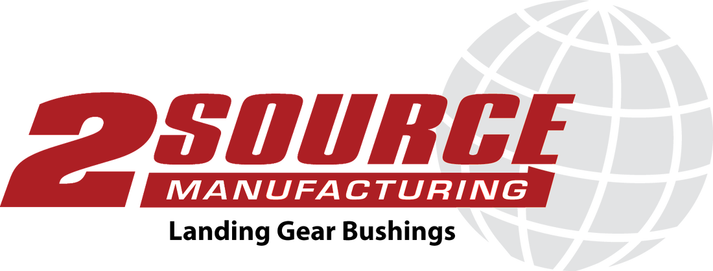

Hello, I'm George Jose
Full stack tech consultant.
Love all things Engineering, Tech and Web.
Mechatronics Engineer.
About Me
Work Experience
Consultant
-
Top 5 Canadian retailer loyalty program revamp
- Front end React developer on a customer facing loyalty points web application
- Technologies used: JavaScript (ES6), React.js, Redux.js Sales demo app
- Tech Lead - Architected solution & led team of developers & designers building full stack microservices-based application to demonstrate Deloitte Digital’s end to end dev & devops capabilities
- Technologies used: JavaScript (ES6), React.js, Redux.js, Docker, Jenkins
Deloitte Canada
July 2016 - Present

Business Technology Analyst
-
Sonnet Insurance
- Solution Architect on a large tech transformation project #ConnectedBank APIs
- Designed, developed & deployed several APIs written in Node.js for an iOS banking app MEAN PoC
- Designed and built a Proof of Concept full stack web application using MongoDB, Express, Angular, Node.js to serve as sales demo Rubix by Deloitte
- Explored applications of blockchain technology in the enterprise
- Evaluated several open source blockchain technologies
- Managed two developers and outlined project tech strategy & roadmap
- Prototyped distributed applications on Ethereum Top 5 Canadian Bank
- Tracked & managed all program finances
- Gained program management & work effort estimation experience
Deloitte Canada
Jan 2015 - July 2016
Engineering Intern, Quality
- Reduced average defects per unit in Medium Voltage Drives from 10.2 to 7 using pareto & Process Failure Mode Effect Analysis (PFMEA) and implementing countermeasures; led to significant cost savings
- Greatly simplified root cause and pareto analysis by developing self-updating quality analysis tool using Python & VBA; interfaced with SAP databases using ODBC
- Played key role in technology transfer to new facility in Brazil
Rockwell Automation
Oct - Dec 2012

Software Developer Co-op
- Designed and implemented tablet-based solution using J2EE to optimize annual inventory process
- Improved efficiency of annual inventory process by about 50%, leading to cost savings of $200k+ annually; savings attained by replacing inefficient paper-based system with newly designed system involving tablets & centralized database
- Developed several modules for internal software system used to audit employee hours and plan vacation days
Toyota Motor Manufacturing Co.
Jan - Apr 2012

Manufacturing Engineering Co-op
- Created and modified several parts and drawings in Solidworks for production
- Designed and implemented an internal company request management system using PHP, MySQL, HTML & JS in order to streamline process leading up to manufacturing
- Designed and implemented database for parts using MS SQL Server & C# with graphical front-end
2Source Manufacturing
May - Aug 2011

Electrical Engineering Co-op
- Played key role in project management, project co-ordination and tracking, document control & site inspections for 500kV Static Var Compensator construction project owned by HydroOne, Siemens and Areva
Siemens Canada
Sep - Dec 2012
Projects
Deloitte Machine Learning Hackathon
- Won 1st place (team of 4) at Deloitte Cognitive & Machine Learning Hackathon
- Predicted likelihood of promoted content being clicked, given large quantities of metadata (>30GB)
- Technologies used: Python, Scikit-learn, SQL, Jupyter
Deloitte Cognitive & Machine Learning Hackathon
Oct 2016
Government of Ontario Data crawler
- Built script in python to crawl publicly available data from Government of Ontario
- Data crawled include names, titles, parent organizations, reporting hierarchy, salaries etc. of government employees
- Technologies used: Python, BeautifulSoup
Deloitte Hackathon
Mar 2016
Hue Ambience
- Wrote script to create immersive media experience by changing light colors based on objects shown on screen
- Script continuously monitors colors of pixels on screen edge & changes Hue lightbulb colors and intensities in near real-time
- Technologies used: Python, Quartz
Personal Project
Jan 2016
Live TTC Map
- Built live map showing real-time locations of Toronto streetcars & buses
- Technologies used: jQuery, CSS, Node.js, Express.js, Google Maps JavaScript API
Personal Project
Nov 2015
Apple Watch Stocks App
- Designed & built a simple portfolio management app for Apple Watch
- Technologies used: Swift, Apple Watch SDK, Xcode
Personal Project
Sep 2015
World Moodlight
- Built an application in Python to change Hue light colors based on how the world is feeling
- World mood is determined from public tweets using the wefeel API
- Technologies used: Raspberry Pi, Python, Hue API
Personal Project
Jan 2015
3D Laser Scanner
- Designed and built low cost, innovative laser sensor capable of modeling its environment and objects around it in 3 dimensions. 3D point cloud data is streamed to computer in real time wirelessly over UDP
- Possible applications: autonomous robot navigation, physical object replication, animation and 3D modeling
- Technologies used: Raspberry Pi, Arduino, C++, Matlab, Meshlab, image processing, UDP, ZigBee, Motors, Optical encoder
Final Year Design Project
Sep 2013 - Apr 2014
Dynamic Facebook Like-meter T-Shirt
- Designed and built ‘Like-meter’ LED T-shirt in 24 hours
- LEDs in ‘Like-meter’ light up as people like your recent activity on Facebook
- Technologies used: Raspberry Pi, Facebook API, Python
Facebook Hackathon
2014

Real Time Operating System
- Programmed Real Time Operating System (RTOS) on top of UNIX using C, C++ and concepts in algorithms and data structures
- Implemented concurrency, timing services, process management, inter-process communication, scheduling and other features
- Technologies used: C / C++, Algorithms & data structures, *nix
MTE 241 Project
Sep - Dec 2011
Autonomous Boat
- Designed and created an autonomous boat capable of navigating itself around racecourse
- Utilized IR proximity sensors and implemented PID controller on Arduino
MTE 380 Project
Jan - Apr 2013
Education
B.A.Sc. Mechatronics Engineering
-
Relevant courses: Machine Intelligence, Computational Neuroscience, Finite Element Methods, Engineering Economics, Real Time Operating Systems, Algorithms & Data Structures, Microprocessor Systems & Interfacing, Linear Systems and Signals, Digital Controls, Power Electronics, Technical Entrepreneurship
University of Waterloo
2009 - 2014
Technical Skills
- Programming languages: JavaScript (ES2015), Python, Java, C++, C, Swift, Matlab, Bash scripting
- Frameworks/Libraries: React, Redux, Angular, Node, Express, MongoDB, RethinkDB, Socket.io
- Experience designing and developing apps (Android, Apple Watch)
- Extensive experience with Arduino and Raspberry Pi
- Experience desinging & developing a real time operating system
- Excellent 3D CAD skills: experience with SolidWorks, Pro Engineer, NX, Google SketchUp, AutoCAD, Abaqus
- Hands-on experience in soldering, working with Multimeters, Function Generators, Oscilloscopes
Skills Summary
- Excellent project management, time management, leadership and communication skills developed through leading and working on projects in school and on co-op placements
- Exceptional analytical and problem solving skills developed through working on several individual and group projects
- Adaptable and always eager to learn; Ability to work under minimal supervision
- Strong team player; highly motivated and hardworking